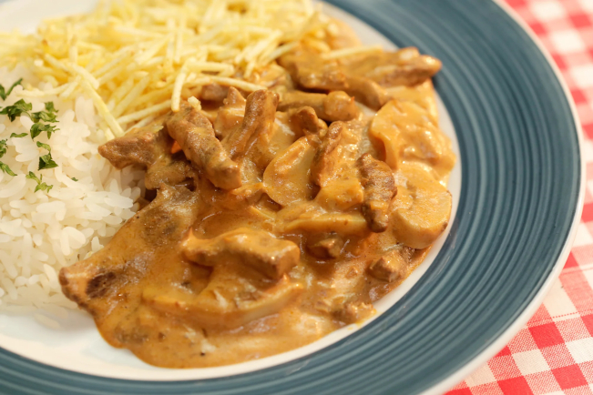

Strogonoff

Description
This is a Brazillian Strogonoff Recipe, perfected along the years by myself.
Ingredients
- 2 tbsp butter
- Half an onion, diced
- 1/2 tbsp salt & garlic seasoning
- 200g champignon, sliced
- 500g filet mignon, sliced
- 1 tbsp worcestershire sauce
- 300g tomato pulp
- Black pepper and oregano to taste
- 1 1/2 tbsp cream cheese
- 200g heavy cream
- 1 tbsp cornstarch mixed with 100ml water
- 100g pickled sweet corn
Steps
- Heat 1 tbsp butter in a non-stick frying pan then add the sliced onion and cook on a medium heat until it starts to soften, add half the salt & garlic seasoning and fry it until golden brown.
- Once the butter starts foaming, add 200g sliced champignon and cook for around 5 mins until completely softened, then tip onto a plate.
- Heat 1 tbsp butter in a non-stick frying pan, then add the remaining salt & garlic seasoning and fry untill golden. Add the sliced filet mignon and fry until completely seared, then add the worcestershire sauce.
- Mix and cook for 2-3 mins, then add the tomato pulp. Add the black pepper and oregano, and let it boil.
- Add the cream cheese, the heavy cream, and the cornstarch, stir untill it starts to boil, then turn off the heat.
- Add the reserved onion and champignon, and the pickled sweet corn.
- Serve with rice and shoestring potatoes on the side.
Back to index